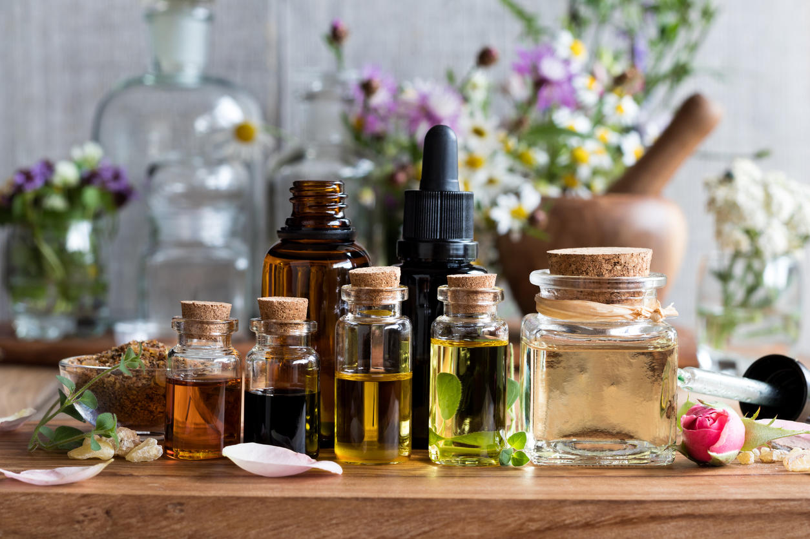
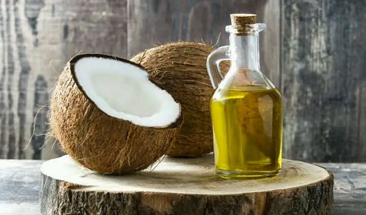

MY HAIR
MY POWER
.png)
| Le beurre de karite | Le miel | La jaune d'oeuf |
.png) |
 | .png) |
| Le beurre de karité est un excellent hydratant pour les cheveux : il leur donne brillance et d'éclat. Prélevez une noisette pour l’ensemble de la chevelure et faites pénétrer au niveau des pointes uniquement puis procédez au shampooing éventuel après un temps de pose (de 30 min à toute une nuit) | Le miel soigne les cheveux abîmés en manque d’hydratation. Pour bien l’utiliser : mélangez dans un bol 2 c. à soupe d’huile d’olive avec 3 c. à café de miel, et quelques gouttes de jus de citron puis appliquez cette préparation comme un masque avec une pause d’une demi-heure sous une serviette de toilette chaude avant de procéder au shampoing habituel. | Le jaune d'oeuf est un remède de grand-mère qui a fait ses preuves. Fouettez légèrement un jaune d'oeuf dans un bol afin d’obtenir un mélange mousseux puis appliquez le mélange sur la longueur des cheveux. Rincez la chevelure après 10 minutes de temps de pause et shampouinez comme d’habitude |
| Le romarin | La prele des champs | L'ortie |
.png) |
.png) |
.png) |
| Il est ideal à utiliser dans le soin des cheveux comme anti-chute,anti-pelliculaire,stimulant... L'infusion de romarin tonifie votre cuir chevelu et apporter brillance à vos cheveux. En macérât huileux :faites macérer, durant quelques jours, et à l’abri de la lumière, quelques branches de romarin dans 200 ml d’une huile végétale de votre choix | La Prêle des champs renforce les cheveux tout en ralentissant leur chute Cette merveillleuse plante permet également de régulier la production de sébum,afin de réduire l'apparition des cheveux gras et de réduire les pellicules grasses. | L'ortie, la plante incontournable pour la pousse de cheveux.Efficace pour lutter contre la fragilité des ongles et la chute des cheveux, c’est l’alliée idéale des cheveux cassants grâce à sa richesse en vitamines et en sels minéraux Appliquée directement sur les cheveux sous forme d’infusion, elle s’utilise en lotion de rinçage après le shampooing |
| L’HUILE DE RICIN | L’HUILE DE COCo | L'huile d'olive |
|  | ||
| L’huile de ricin nous vient directement d’Afrique tropicale. Elle est idéale pour nourrir le cuir chevelu et rendre les cheveux plus brillants, plus souples, plus forts. Riche en acide gras et en vitamine E, il est important d’uniquement faire des cures d’huile de ricin de quelques semaines et de les espacer de quelques mois aØn que les cheveux ne s’habituent pas trop à cet apport de gras. | L’huile de coco, on l’utilise en masque en l’appliquant sur nos cheveux secs et en les enroulant dans une serviette chaude humide. On laisse poser et on rince en utilisant un shampoing adapté à nos cheveux. Grâce à sa composition très riche, elle rend nos cheveux plus brillants et leur donne un aspect plus forts. | L’huile d’olive a un pouvoir très hydratant et permet de venir à bout des pointes fourchues. Il suffit de masser les longueurs des cheveux en évitant les racines avec une cuillère à soupe d’huile d’olive (voire deux pour les cheveux très longs) et de les enrouler dans une serviette chaude pendant 30 minutes environ. |